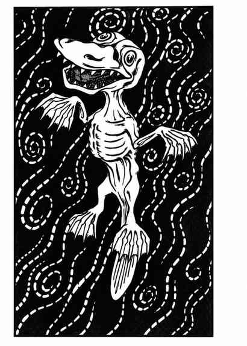

思维吞噬者 · Thought Eater
 |
|
思维吞噬者居住在以太界，但感官延伸至物质位面；任一位面中使用灵能或与灵能有关的能量，都会在其能力或魔法的范围内吸引它。能观察到它的人会看到一只病态灰色、骨架般身体、头部巨大且像鸭嘴兽的生物；蹼足使它能够在以太中游动。它只能被以太生物攻击，唯一欲望是吞食吸引它的猎物的精神能量。
若思维吞噬者进入目标 6 寸内，目标尝试使用的任何灵能或法术能量都可能被它吸收；在 1 寸范围内，它甚至能开始吞食非灵能生物的思想。每只思维吞噬者在饱足前可吞食 101–200 点灵能点：魔法能量按每个法术等级 5 点灵能点换算，直接吞食思想则 1 点智力等于 10 点灵能点。被吞食思想的生物会永久失去智力；智力降至 0 时死亡，1 为无心智，2 为痴愚，3 为低能，4 相当于低等智障。
包括心灵空白术在内的心灵防御，以及针对灵能或灵能相关力量的魔法装置，都能阻止这种可怖生物的攻击。